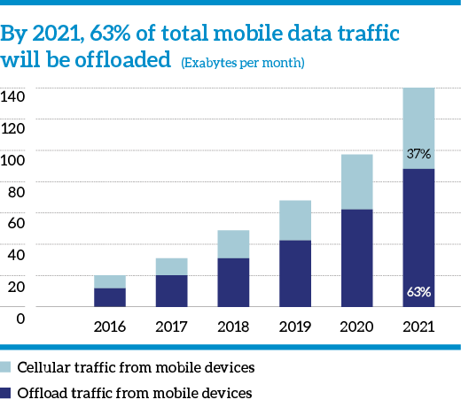
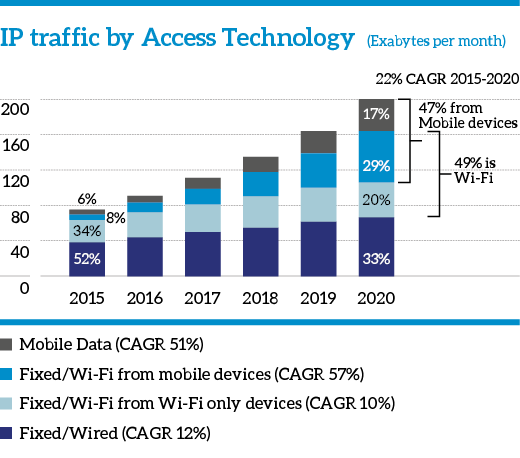
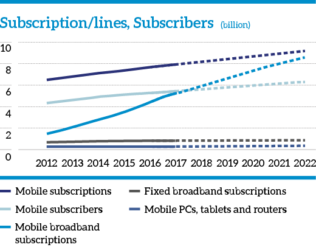

Operating environment
Global telecommunication industry
The world has witnessed a digital revolution that ushers in huge change at an accelerated rate. The worldwide shift towards digitalisation will continue to transform the way the world communicates, conducts business, socialises, receives healthcare, and education. This will seep into the way we plan, design, and build our cities to support the future smart cities.
In the year 2018, the global telecommunication industry will be driven by developments related to the Internet of Things (IoT), also known as the Internet of Everything (IoE), the actualisation of 5G technology, big data analytics, cloud computing, Network Functions Virtualisation (NFV), and Software-Defined Networking (SDN).
In 2017, 46.8% of the global population accessed the Internet. This figure is projected to grow to 53.7% in 2021. The technological advances in 2017 saw a higher demand for data and video. However, intense competition and high capital spending required for the enhancement of broadband infrastructure, limited the opportunity to benefit from these trends. In the wireline industry, traditional landline phone service is being hurt by wireless. In cable, consumers have increasingly reduced conventional television in favour of over the top (OTT) video. The boundary between cable and telecom operators will continue to fade, with the telco companies expanding into the cable market. This will better position the industry towards future sustainable revenue growth.
Mobile penetration rate will increase from 111% in 2017 to 115% in 2018 which will demand an increased capital expenditure. Yet the stiff competition in the industry will reduce prices which is great news for the consumers. Though there will be a clear growth in connectivity, telco companies will find it difficult to benefit from it. The total telecom revenue in the 60 biggest markets are expected to fall by 2% in US dollar terms to USD 1.2 trillion.
In 2018, operators will have to adapt to this new ecosystem. They will need to develop more partnerships with OTT players, offer new differentiated OTT services, and enable a wider range of mobile applications. Investments in infrastructure and network improvements will be critical to face the dynamic, competitive environment.

Note: Offload pertains to traffic from dual-mode devices (excluding laptops) over Wi-Fi or small-cell networks.
Source: Cisco VNI Mobile, 2017

Note: Fixed/Wi-Fi from Mobile devices may include a small amount of fixed/wired from mobile devices.
Source: Cisco VNI Mobile, 2017

Source: Ericsson Mobility Report, June 2017
Local telecommunication industry
Sri Lankan telecommunication and ICT sectors have grown exponentially in the last few years. Similar growth was recorded in 2017. While the local industry faces similar challenges as the global, there is an increased demand for multifaceted services with greater focus on digital services. The Government’s vision to develop the digital economy and to become a high-income, knowledge-based economy by 2030, has stressed the need for innovation, technology, and the necessary infrastructure to sustain the digital transformation.
In 2017, Sri Lanka was ranked 85th in the Global Competitive Index published by the World Economic Forum and secured the 106th place in technological readiness. Sri Lanka’s internet penetration stands at 32%, 6.71 million Internet users in 2018 which is a growth of 7%. Mobile penetration too grew by 4% to reach 131 per 100. There are 6 million active users of social media, out of which 5.5 million access social media via mobile devices. Mobile phones account for 76% share of web traffic by device.
The year also saw the development of the IoT in various areas such as cloud computing, data centres, global connectivity projects, National Fibre Optic Backbone Network, broadband technology deployments leading to a range of digital services such as smart living solutions. The SEA-ME-WE 5 high-capacity submarine cable exceeding 100 Gbps, enhances global connectivity and raises the potential for business process and knowledge process outsourcing. It will promote multiregional economic development.
Challenges
The ICT sector is heavily regulated and taxed by the Government. This is one of the principal challenges faced by all service providers of the industry.
Similar to the previous years, the influence of OTT operators has caused a decline in revenues in the traditional areas of the industry. Service providers have turned the threat into an opportunity by shifting focus to developing bespoke OTT solutions and focusing on delivering higher volumes of data. Data has become the currency of the global digital economies and service providers concentrate more on providing fast mobile and broadband connectivity. Sri Lankan Telcos have expanded 4G connectivity to cover the island and hope to expand LTE coverage from cities to the rural areas. The successful rollout of 4.5G services by SLT Mobitel is expected to strengthen the country’s emerging ICT industry.
Intense competition and higher capital expenditure fordeveloping the necessary telecommunication infrastructure are other challenges in the industry. In such an environment, the customer has benefited the most. With the speed of innovations and change, the expenditure on infrastructure will not slow down.
Outlook
The Government hopes to launch the proposed digital economy strategy in April 2018 which will uplift the nation’s economic growth by around 1% to 3 % in 2019. The strategy will focus on the development of the agriculture, tourism, and manufacturing sectors. This will directly contribute to the growth of the telecommunication sector of Sri Lanka.
The Government will continue to implement e-government initiatives like the digital integration of all Government establishments through the Lanka Government Network (LGN 2.0). This will help reduce waste and contribute towards eco-friendly, sustainable development.
2018 will continue to see the growth of the digital economy and the better integration of Internet of Things and digital services. Sri Lanka’s global connectivity via undersea cables and rollout of 4.5G, and fibre optic broadband services will strengthen the emerging ICT sector. The highly competitive environment will result in wide coverage, fast speeds, and low retail tariffs which will benefit customers and usher the country towards digital economic growth.